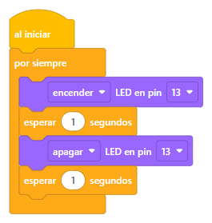
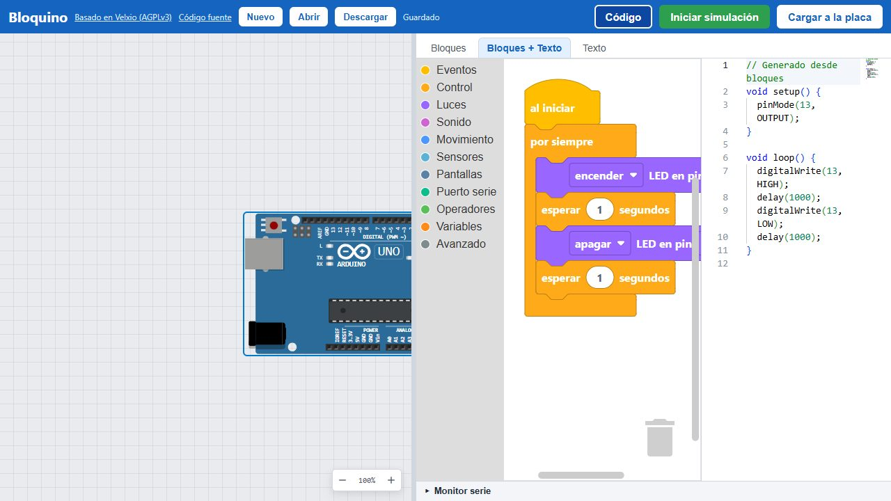

Paso 3 · Conocer el taller
Toca los números 👇

Captura: Bloquino
💡 Cada botón tiene su trabajo.
Hoy montamos el taller completo, paso a paso…
¡y le das tu primera orden a un Arduino de verdad!
Paso 1 · Conocer la herramienta
Así como un carpintero tiene su taller 🪚,
un programador tiene el suyo: el lugar donde fabrica programas.
Pones la placa y las piezas en la mesa y las unes con cables.
Encajas bloques de colores, como en Scratch: ese es tu programa (el sketch).
Pruebas tu programa en la pantalla, sin placa y sin miedo a romper nada.
Con un clic, tu programa viaja por el cable hasta el cerebrito de verdad.
Paso 2 · Abrir el taller
Nada que instalar, ni cuentas, ni contraseñas: Bloquino vive en el computador del profe y cada uno lo abre en su navegador. 🏫
Paso 3 · Conocer el taller
Captura: Bloquino
💡 Cada botón tiene su trabajo.
Paso 4 · Conocer al cerebrito
💡 Cada parte tiene un superpoder.
Paso 4 · Tu placa del kit
💡 Es azul y se ve distinta… pero piensa igualito.
Paso 5 · ¡A conectar!
¿No se prende nada? Revisa las dos puntas del cable… o llama al profe. 🙋
Paso 6 · La prueba de fuego
Toca el 📷 de cada paso para ver cómo se ve en pantalla.
Paso 6 · ¿Qué dice tu programa?

al iniciar Aquí empieza todo, apenas la placa se enciende.
por siempre Lo de adentro se repite para siempre, hasta que desenchufes la placa. 🔁
encender LED en pin 13 ¡Electricidad! El LED L se prende. 💡
esperar 1 segundos Se queda prendido 1 segundo, o sea 1000 milisegundos. ⏳
apagar LED en pin 13 Sin electricidad: el LED se apaga. 🌑
esperar 1 segundos Otro segundo, ahora apagado… ¡y vuelta a empezar!
sketches/sesion-02/blink/blink.bloquino
Patio de juegos
⭐ Reto de la sesión
Un corazón no parpadea parejo: hace tum-tum… pausa… tum-tum… pausa.
Pista: necesitas varios bloques esperar ? segundos con números distintos.
Así debería verse:
Duelo de cerebritos
Lo lograste
Hoy abriste tu taller, Bloquino, conociste tu placa y la conectaste…
¡y le cargaste tu primer Blink de verdad!
La electricidad es como el agua… y la protoboard será tu nueva mejor amiga. ¡Armaremos circuitos propios, con cables de verdad!
Extra · El secreto de los bloques

encender LED en pin 13
➡️ digitalWrite(13, HIGH);
esperar 1 segundos
➡️ delay(1000);
Captura: Bloquino
En el panel Código, la pestaña «Bloques + Texto» muestra los dos a la vez.
Ese texto es C++: el idioma que de verdad entiende la placa. 💪